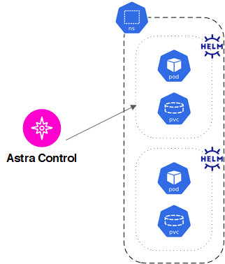
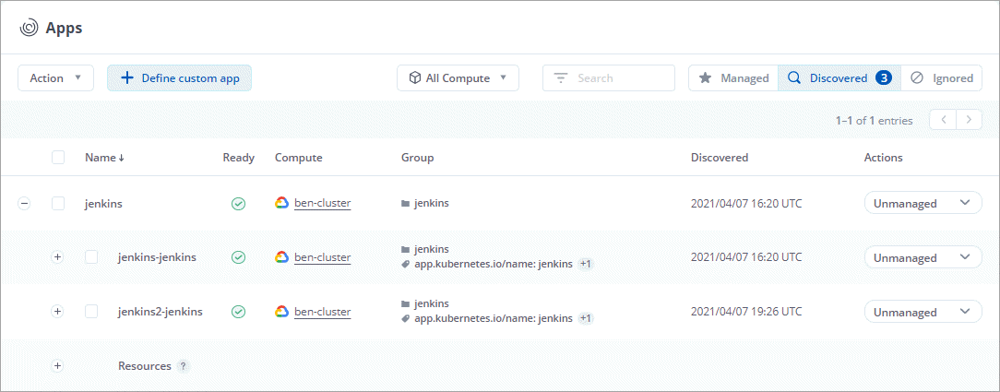
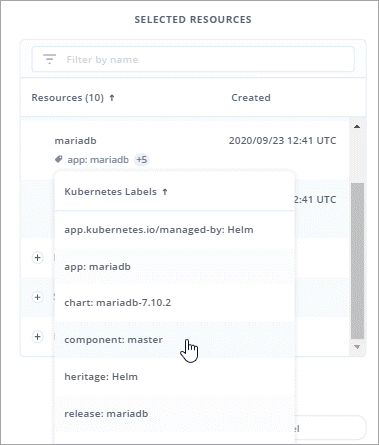
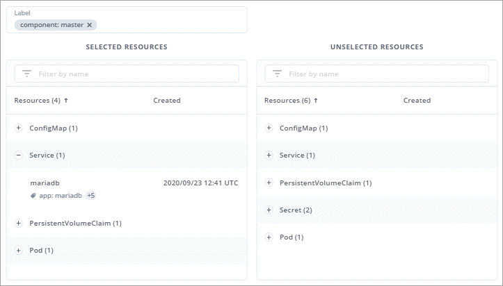

앱 관리를 시작합니다
기여자
먼저 해 "Astra Control에 Kubernetes 클러스터를 추가합니다", 클러스터(Astra Control 외부)에 앱을 설치한 다음 Astra Control의 앱 페이지로 이동하여 앱 관리를 시작할 수 있습니다.
설명합니다
다음과 같은 Astra Control 앱 관리 요구 사항을 고려하십시오.
-
* 라이선스 *: Astra Control Center를 사용하여 앱을 관리하려면 Astra Control Center 라이센스가 필요합니다.
-
* Namespaces *: Astra Control은 앱이 단일 네임스페이스 이상의 범위를 포괄하지 않도록 하지만 네임스페이스에는 여러 개의 앱이 포함될 수 있습니다.
-
* StorageClass *: StorageClass가 명시적으로 설정된 앱을 설치하고 앱을 복제해야 하는 경우 클론 작업의 타겟 클러스터에 원래 지정된 StorageClass가 있어야 합니다. 명시적으로 StorageClass를 동일한 StorageClass가 없는 클러스터로 설정한 애플리케이션을 클론 복제하면 실패합니다.
-
* Kubernetes 리소스 *: Astra Control에서 수집하지 않은 Kubernetes 리소스를 사용하는 앱에는 전체 앱 데이터 관리 기능이 없을 수 있습니다. Astra Control은 다음과 같은 Kubernetes 리소스를 수집합니다.
-
클러스터 역할
-
ClusterRoleBinding 을 참조하십시오
-
ConfigMap을 클릭합니다
-
사용자 지정 리소스 정의
-
CustomResource 를 선택합니다
-
DemonSet
-
구축
-
DeploymentConfig(배포 구성
-
침투
-
뮤atingWebhook
-
PersistentVolumeClaim
-
포드
-
ReplicaSet입니다
-
RoleBinding 을 클릭합니다
-
역할
-
루트
-
비밀
-
서비스
-
서비스 계정
-
StatefulSet 을 선택합니다
-
Webhook을 확인합니다
-
지원되는 앱 설치 방법
다음 방법을 사용하여 Astra Control로 관리하려는 앱을 설치할 수 있습니다.
-
* 매니페스트 파일 *: Astra Control은 kubctl을 사용하여 매니페스트 파일에서 설치된 앱을 지원합니다. 예를 들면 다음과 같습니다.
kubectl apply -f myapp.yaml
-
* Helm 3 *: Helm을 사용하여 앱을 설치하는 경우 Astra Control에 Helm 버전 3이 필요합니다. Helm 3(또는 Helm 2에서 Helm 3으로 업그레이드)과 함께 설치된 앱의 관리 및 클론 생성이 완벽하게 지원됩니다. Helm 2가 설치된 앱 관리는 지원되지 않습니다.
-
* 운용자 구축 앱 *: Astra Control은 네임스페이스 범위 연산자와 함께 설치된 앱을 지원합니다. 이러한 연산자는 일반적으로 "pass-by-reference" 아키텍처가 아니라 "pass-by-value"로 설계되었습니다. 다음은 이러한 패턴을 따르는 일부 운영자 앱에 대한 설명입니다.
Astra Control은 "pass-by-reference" 아키텍처(예: CockroachDB 운영자)로 설계된 운영자를 복제하지 못할 수 있습니다. 이러한 유형의 클론 복제 작업 중에 클론 복제 운영자는 클론 복제 프로세스의 일부로 고유한 새로운 암호가 있음에도 불구하고 소스 운영자의 Kubernetes 암호를 참조하려고 합니다. Astra Control이 소스 운영자의 Kubernetes 암호를 모르기 때문에 클론 작업이 실패할 수 있습니다.

|
운영자와 설치하는 앱은 동일한 네임스페이스를 사용해야 합니다. 운영자가 배포 .YAML 파일을 수정해야 할 수도 있습니다. |
클러스터에 앱을 설치합니다
클러스터를 Astra Control에 추가했으므로 클러스터에 앱을 설치할 수 있습니다. 영구 볼륨은 기본적으로 새 스토리지 클래스에 프로비저닝됩니다. Pod가 온라인 상태가 되면 Astra Control을 사용하여 앱을 관리할 수 있습니다.
Astra Control은 스토리지가 Astra Control에서 설치한 스토리지 클래스에 있는 경우에만 상태 저장 앱을 관리합니다.
제어 차트에서 일반적인 응용 프로그램을 배포하는 방법에 대한 도움말은 다음을 참조하십시오.
앱 관리
Astra Control은 클러스터에서 실행 중인 앱을 검색할 때 관리 방법을 선택할 때까지 관리되지 않습니다. Astra Control에서 관리되는 응용 프로그램은 다음 중 하나일 수 있습니다.
-
네임스페이스에서 모든 리소스를 포함하는 네임스페이스입니다

-
네임스페이스 내에서 helm3를 사용하여 배포된 개별 응용 프로그램입니다

-
Kubernetes 레이블로 식별되는 리소스 그룹(Astra Control에서 _custom app_이라고 함)

아래 섹션에서는 이러한 옵션을 사용하여 앱을 관리하는 방법에 대해 설명합니다.
네임스페이스로 앱 관리
앱 페이지의 * 검색됨 * 섹션에는 네임스페이스와 Helm이 설치한 앱 또는 해당 네임스페이스의 사용자 지정 레이블 앱이 표시됩니다. 각 앱을 개별적으로 또는 네임스페이스 수준에서 관리하도록 선택할 수 있습니다. 데이터 보호 작업에 필요한 세분화 수준으로 세분화됩니다.
예를 들어 주 단위 주기를 가진 "Maria"에 대한 백업 정책을 설정할 수 있지만, "MariaDB"(동일한 이름 공간에 있음)를 더 자주 백업해야 할 수 있습니다. 이러한 요구사항에 따라 단일 네임스페이스가 아닌 앱을 별도로 관리해야 합니다.
Astra Control을 사용하면 계층 구조의 수준(네임스페이스 및 해당 네임스페이스의 앱)을 모두 별도로 관리할 수 있지만, 가장 좋은 방법은 하나 또는 다른 수준을 선택하는 것입니다. 작업이 네임스페이스 및 앱 수준에서 동시에 발생하면 Astra Control에서 수행하는 작업이 실패할 수 있습니다.
-
응용 프로그램 * 을 선택한 다음 * 검색됨 * 을 선택합니다.

-
검색된 네임스페이스 목록을 보고 네임스페이스를 확장하여 앱 및 관련 리소스를 봅니다.
Astra Control은 Helm 앱 및 사용자 지정 레이블 앱을 네임스페이스에서 보여 줍니다. H제어 레이블을 사용할 수 있는 경우 태그 아이콘으로 지정됩니다.
다음은 네임스페이스에서 두 개의 앱을 사용하는 예입니다.

-
각 앱을 개별적으로 관리할지 아니면 네임스페이스 수준에서 관리할지 결정합니다.
-
계층 구조의 원하는 레벨에서 * Actions * 열의 드롭다운 목록을 선택하고 * Manage * 를 선택합니다.

-
앱을 관리하지 않으려면 원하는 앱의 * Actions * 열에서 드롭다운 목록을 선택하고 * Ignore * 를 선택합니다.
예를 들어, "Jenkins" 네임스페이스의 모든 앱을 함께 관리하여 동일한 스냅샷 및 백업 정책을 가지려면 네임스페이스를 관리하고 네임스페이스의 앱을 무시해야 합니다.

관리하기로 선택한 앱은 이제 * Managed * 탭에서 사용할 수 있습니다. 무시된 앱은 * ignored * 탭으로 이동합니다. 검색된 탭에 앱이 표시되지 않으므로 새 앱을 설치하면 찾아서 관리하기가 더 쉬워집니다.
Kubernetes 레이블로 앱 관리
Astra Control에는 응용 프로그램 페이지 상단에 * 사용자 정의 앱 정의 * 라는 작업이 포함되어 있습니다. 이 작업을 통해 Kubernetes 레이블로 식별된 앱을 관리할 수 있습니다. "Kubernetes 레이블로 앱 정의에 대해 자세히 알아보십시오".
-
응용 프로그램 > 사용자 정의 응용 프로그램 정의 * 를 선택합니다.
-
사용자 정의 응용 프로그램 정의 * 대화 상자에서 응용 프로그램을 관리하는 데 필요한 정보를 제공합니다.
-
* 새 앱 *: 앱의 표시 이름을 입력합니다.
-
* 클러스터 *: 앱이 있는 클러스터를 선택합니다.
-
* 네임스페이스: * 앱의 네임스페이스를 선택합니다.
-
* 레이블: * 레이블을 입력하거나 아래 리소스에서 레이블을 선택합니다.
-
* 선택한 리소스 *: 보호하려는 선택한 Kubernetes 리소스(Pod, 기밀, 영구 볼륨 등)를 보고 관리합니다.
예를 들면 다음과 같습니다.

-
리소스를 확장하고 레이블 수를 선택하여 사용 가능한 레이블을 봅니다.

-
레이블 중 하나를 선택합니다.

-
레이블을 선택하면 * Label * (레이블 *) 필드에 표시됩니다. 또한 Astra Control은 선택한 레이블과 일치하지 않는 리소스를 표시하도록 * 선택되지 않은 리소스 * 섹션을 업데이트합니다.
-
선택하지 않은 리소스 *: 보호하지 않을 앱 리소스를 확인합니다.

-
-
사용자 지정 앱 정의 * 를 선택합니다.
Astra Control은 앱 관리를 지원합니다. 이제 * Managed * 탭에서 찾을 수 있습니다.
시스템 앱은 어떻습니까?
Astra Control은 Kubernetes 클러스터에서 실행 중인 시스템 앱을 검색합니다. 앱 목록을 필터링하여 볼 수 있습니다.

이러한 시스템 앱은 기본적으로 표시되지 않습니다. 백업해야 하는 경우는 드뭅니다.
 문서 변경 요청
문서 변경 요청 이 페이지 편집
이 페이지 편집 기여하는 방법 자세히 알아보기
기여하는 방법 자세히 알아보기